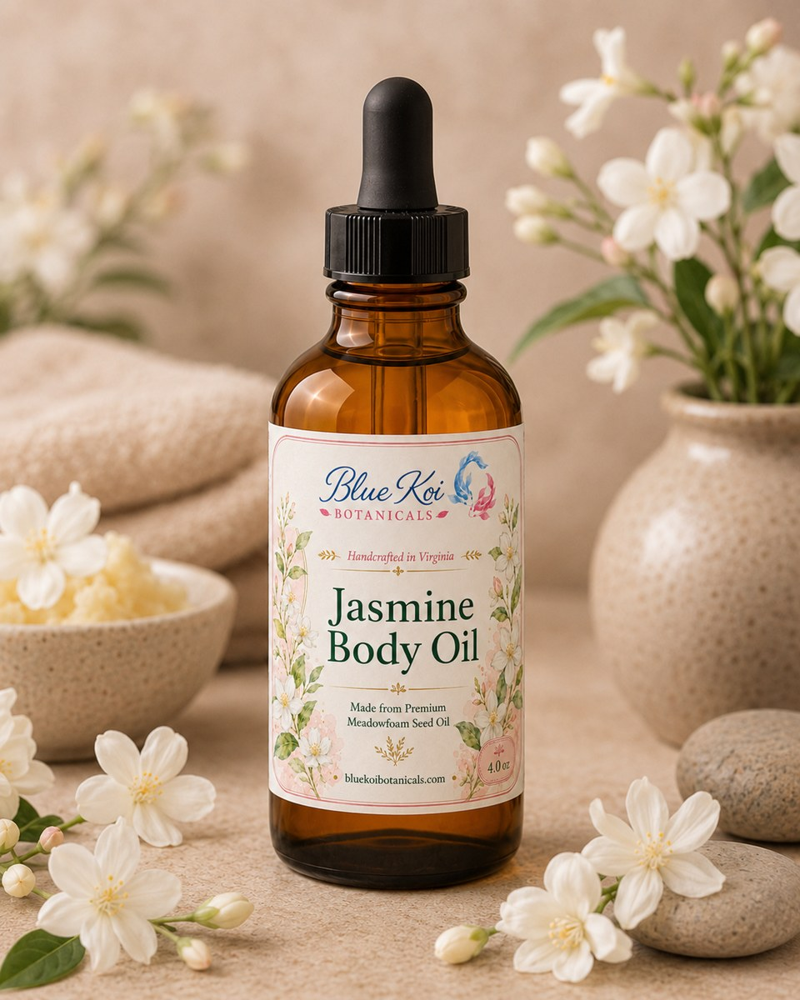
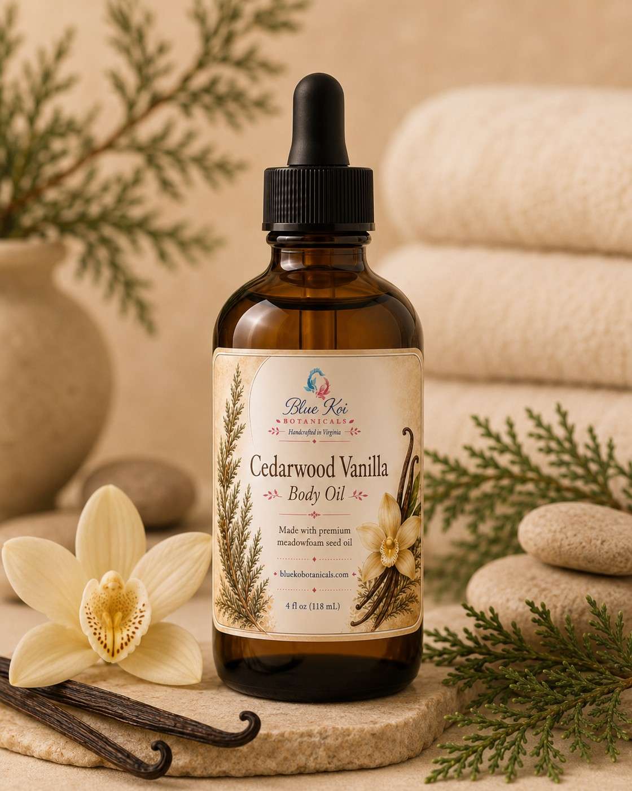
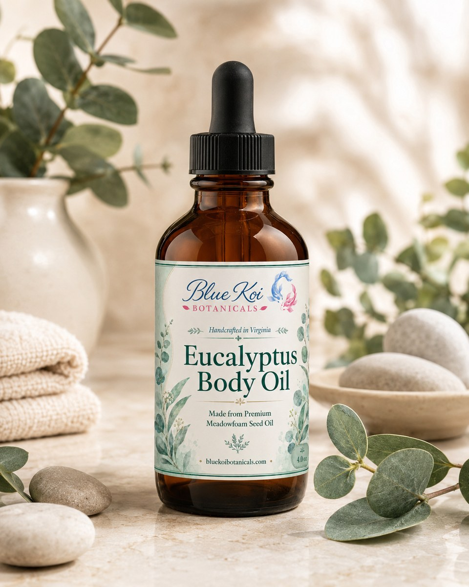
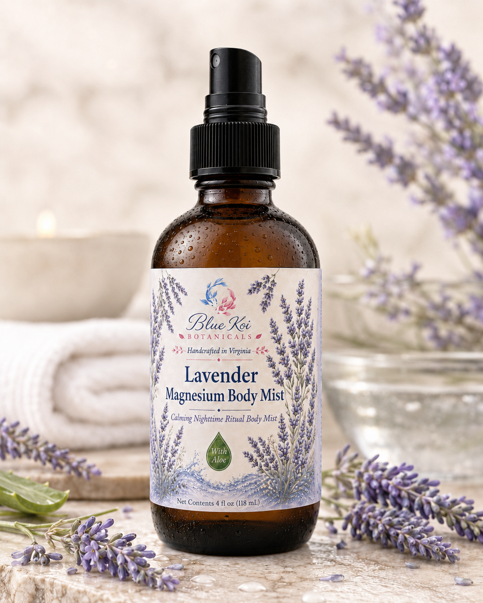
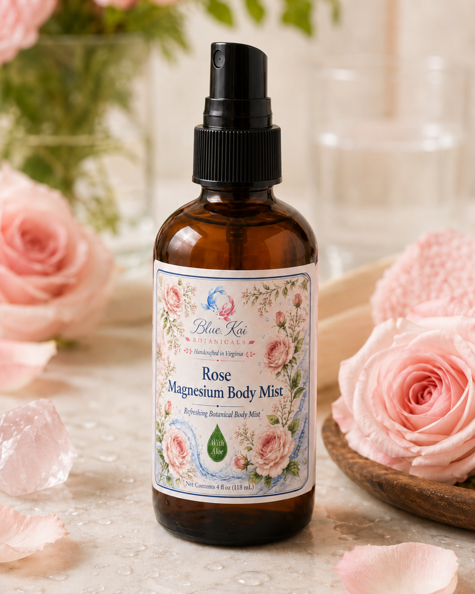
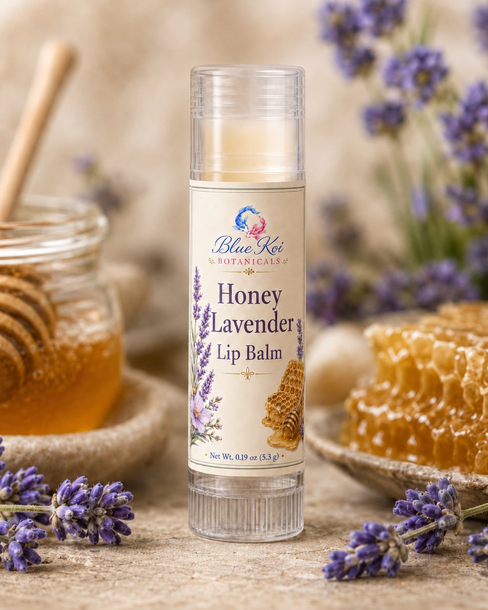

Handcrafted in Virginia
Botanical care for slow, beautiful rituals.
Blue Koi Botanicals creates small-batch salves, body oils, lip balms, magnesium sprays, and whipped body butters with premium botanical ingredients, refined scents, and a grounded apothecary feel.

Shop online
Ready to order?
Use the official Blue Koi Botanicals online store for current availability, secure checkout, and size selections.
Featured products
Jasmine is the standout ritual.
Lead with the floral products that feel the most polished: a silky body oil and a plush whipped body butter with arrowroot powder for a smoother, less greasy finish.

Jasmine Body Oil
$22A romantic floral body oil that makes skin look soft, conditioned, and luminous without a heavy finish.
Explore product →
Jasmine Whipped Body Butter
$32A luxe floral body butter with jasmine, ylang ylang, and arrowroot powder for rich moisture with a cleaner finish.
Explore product →Full catalog
All fourteen products, ready to browse.
Scroll through the complete Blue Koi Botanicals lineup: CBD salves, body oils, magnesium body mists, lip balms, and whipped body butters.

CBD Salve 2.0 oz
$39A focused, cooling salve for hard-working areas—1000 mg hemp-derived CBD isolate in a rich botanical balm.
Explore product →
CBD Salve 4.0 oz
$72The bigger jar for customers who reach for salve often—2000 mg CBD isolate with a crisp menthol-camphor feel.
Explore product →
Lavender Body Oil
$22Silky post-shower moisture with lavender, ylang ylang, and honey for a calm, polished daily ritual.
Explore product →Jasmine Body Oil
$22A romantic floral body oil that makes skin look soft, conditioned, and luminous without a heavy finish.
Explore product →
Cedarwood Vanilla Body Oil
$22Warm, woodsy-sweet body oil with cedarwood, vanilla, lavender, ylang ylang, and honey.
Explore product →
Eucalyptus Body Oil
$22A fresh spa-style body oil softened with lavender, vanilla, cedarwood, and honey for a cleaner finish.
Explore product →
Lavender Magnesium Body Mist
$16A lavender mineral mist that turns a quick spray into a calming nighttime body-care ritual.
Explore product →
Rose Magnesium Body Mist
$16A soft rose mineral mist with aloe that makes a quick body-care reset feel fresh, floral, and boutique-worthy.
Explore product →
Honey Lavender Lip Balm
$6Soft, sweet, and floral lip care in a firmer botanical base made for everyday carry.
Explore product →
Lavender Spearmint Lip Balm
$6Fresh lavender-spearmint lip care with a clean glide and a pocket-friendly botanical feel.
Explore product →
Lavender Whipped Body Butter
$32Rich shea-and-meadowfoam moisture with arrowroot powder for a plush feel that does not drag greasy.
Explore product →
Jasmine Whipped Body Butter
$32A luxe floral body butter with jasmine, ylang ylang, and arrowroot powder for rich moisture with a cleaner finish.
Explore product →
Cedarwood Vanilla Whipped Body Butter
$32A warm, cozy body butter that makes dry-feeling skin feel cushioned, smooth, and cared for.
Explore product →
Unscented Whipped Body Butter
$32The rich body butter experience without added scent—dense, plush, and softened with arrowroot powder.
Explore product →Small-batch formulas made to feel thoughtful, polished, and personal.
Clear ingredient lists and simple formulas without inflated claims.
Lavender, rose, eucalyptus, jasmine, cedarwood vanilla, honey lavender, and unscented options each have their own identity.
Elegant packaging designed to feel at home in a spa, boutique, market booth, or daily routine.